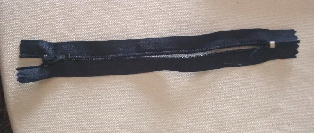

Grupo 01 - A
Integrantes:
- Ana Beatriz
- Ana Letícia
- Érica de Jesus
- Francielly Demazo
- Gustavo Gardino
Fizemos um estojo com materiais recicláveis que tínhamos fácil acesso em casa, um objeto que nós estudantes usamos no cotidiano e achamos que seria um bom exemplo de coisas que já conhecemos sendo reconstruída de uma forma que não agrida tanto o meio ambiente, fazendo também nosso próprio design para o estojo, pensando na ideia de sustentabilidade.
Estojo de bolsa

Nossa primeira proposta á apresentarmos é o estojo de bolsa. Ele foi criado pensando na ideia de ser menor, podendo assim ser levado para todos os lugares.
Estojo escolar

Mostraremos agora nossa proposta de um estojo maior, que geralmente é usado em escolas e faculdades.
Estojo de bolsa
Materiais Utilizados
- Garrafa PET
- Caixa de sapatos
- Zíper
- Fita e um slogan para decoração

Modo de Preparo
Para produzir o estojo de bolsa usamos uma garrafa pet, para ser o "corpo do estojo" e uma caixa de sapatos, para ser a base.
E para decoração / finalização usamos um zíper, para fechar o estojo, e uma fita para decorá-lo, sendo esse o slogando do nosso estojo.
Estojo escolar
Materiais Utilizados
- Garrafa PET
- Papelão
- Sacolas plásticas
- Zíper
- Slogan
Modo de Preparo
Disponível neste vídeo:
Foi cortada as extremidades (a parte de baixo e a parte de cima) da garrafa PET, fez se então um corte sagital (ao meio verticalmente) na garrafa, e então colocado o zíper entre os cortes.
Foi cortado um círculo de papelão para colar nas suas laterais, colando nele o slogan da embalagem.
E então foram entrelaçadas várias sacolas plásticas individualmente.
O processo final é colar estas sacolas plásticas na superfície da garrafa PET.
Considerações finais
Nesse trabalho produzimos uma embalagem com materiais recicláveis, com o intuito de incentivar as pessoas a pensarem em diferentes maneiras de como podemos substituir as embalagens mais simples por outras mais sustentáveis.
As embalagens causam grandes impactos ambientais por serem muito usadas, tendo o descarte incorreto desses produtos, causamos entupimentos de bueiros, poluição das águas, perigo à vida dos animais marinhos e poluição do solo.
E lembre-se sempre de preservar e cuidar do meio ambiente, pois ele é único.